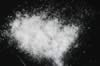

|
|
(For further information on spectroscopy, see:
http://speclab.cr.usgs.gov)
TITLE: Calcite HS48 DESCRIPT
DOCUMENTATION_FORMAT: MINERAL
SAMPLE_ID: HS48
MINERAL_TYPE: Carbonate
MINERAL: Calcite (Calcite group)
FORMULA: CaCO3
FORMULA_HTML: CaCO3
COLLECTION_LOCALITY: Cherokee County, Kansas
ORIGINAL_DONOR: Hunt and Salisbury Collection
CURRENT_SAMPLE_LOCATION: USGS Denver Spectroscopy Laboratory
ULTIMATE_SAMPLE_LOCATION: USGS Denver Spectroscopy Laboratory
SAMPLE_DESCRIPTION:
Forms series with Rhodochrosite. Trimorphous with Aragonite and Vaterite.
Original sample description and visible-NIR spectrum was published in:
Hunt, G.R., J.W. Salisbury, 1971, Visible and near-infrared spectra of minerals and rocks: II. Carbonates. Modern Geology, v. 2, p. 23-30.
They said: "the sample appears colorless and mineralogically pure. Its spectrum clearly displays the strong carbonate bands from 1.8 to 2.6µ as in the sample above, which are common to most carbonates. It also displays a weak band near 1.1µ and a fall-off in reflectivity less than 0.4µ, which can be attributed to the presence of ferrous ion substituting in small amount for calcium. An analysis of this sample shows that 0.09% of iron by weight is present. This chemical and spectral behavior is quite typical of calcite. Again, pilling of the finest size fraction probably produces the crossover of the spectral curves in the visible."
The spectrum here indicates a pure calcite. The sample appears white with no contaminants under a hand lens.
See Clark, R.N., T.V.V. King, M. Klejwa, G. Swayze, and N. Vergo, 1990, High spectral resolution reflectance spectroscopy of minerals: J. Geophys Res. 12653-12680.
IMAGE_OF_SAMPLE:

END_SAMPLE_DESCRIPTION.
XRD_ANALYSIS:
Pure Calcite -- by Norma Vergo
END_XRD_ANALYSIS.
COMPOSITIONAL_ANALYSIS_TYPE: None # XRF, EM(WDS), ICP(Trace), WChem
COMPOSITION_TRACE: None
COMPOSITION_DISCUSSION:
An analysis of this sample by:
Hunt, G.R., J.W. Salisbury, 1971, Visible and near-infrared spectra of minerals and rocks: II. Carbonates. Modern Geology, v. 2, p. 23-30.
shows that 0.09% of iron by weight is present.
END_COMPOSITION_DISCUSSION.
MICROSCOPIC_EXAMINATION:
Bimodal grain size distribution:
population 1 210µm 98 vol%
population 2 20µm 2 vol%
avg. grain size of populations = 208µm
Pure sample. Clear rhombs. Large grains 40% coated with smaller grains. Readily fizzes in dilute HCl. G. Swayze
END_MICROSCOPIC_EXAMINATION.
SPECTROSCOPIC_DISCUSSION:
END_SPECTROSCOPIC_DISCUSSION.
SPECTRAL_PURITY: 1a2_3_4_ # 1= 0.2-3, 2= 1.5-6, 3= 6-25, 4= 20-150 microns
| LIB_SPECTRA_HED: | where | Wave Range | Av_Rs_Pwr | Comment |
|---|---|---|---|---|
| LIB_SPECTRA: | splib04a r 799 | 0.2-3.0µm | 200 | g.s.= 208 µm |
| LIB_SPECTRA: | splib05a r 1508 | 0.2-3.0µm | 200 | g.s.= |
| LIB_SPECTRA: | splib06a r 4147 | g.s.= |
{kind=link}